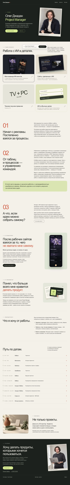
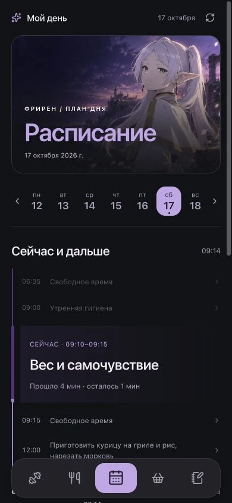
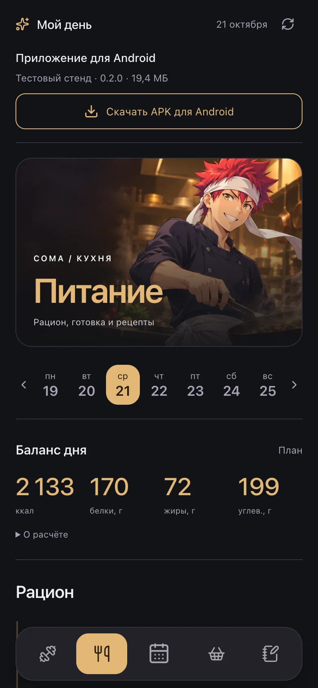
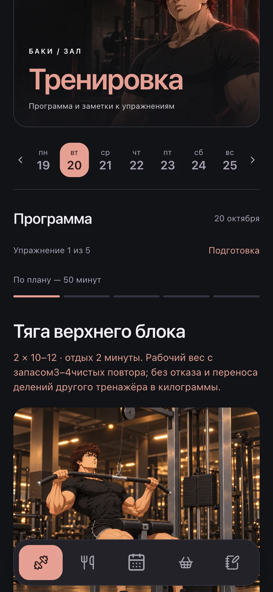
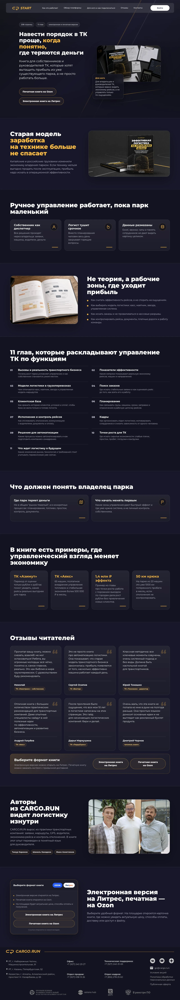
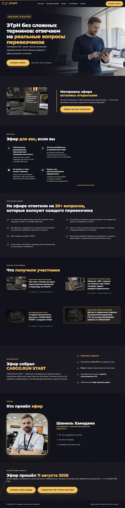
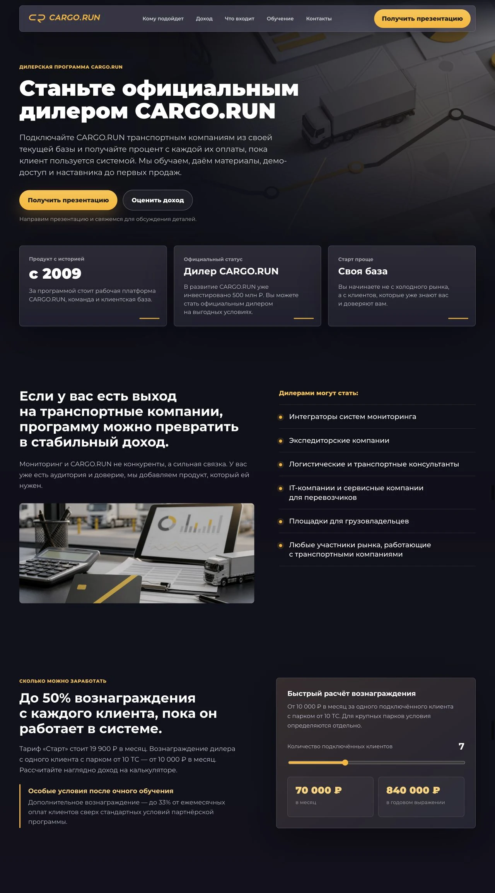

Идея. Страница.
Работающий сценарий.
С помощью ИИ делаю сайты: от содержания и первых набросков до вёрстки, мобильной версии и проверки в браузере.
Показать опыт в деле.
Дать больше понимания обо мне, чем позволяет обычное резюме: путь, решения и конкретные проекты.
Собрал историю, разделил её на кейсы и продумал просмотр на компьютере и телефоне. Сравнил варианты подачи, проверил переходы и довёл страницы до готового результата.

Мой день — сначала в браузере.
Собрать результаты работы помощников в одном месте: расписание, питание, тренировки, покупки и заметки.
С помощью ИИ сделал сайт на платформе ChatGPT. Продумывал структуру и переходы: из задачи можно открыть рецепт, на тренировке — программу и заметки. Разделы связал общей навигацией и адаптировал для телефона.
Эта веб-версия стала первым удобным входом в систему агентов. Позже её сценарии развил в Android-приложении.



Книга, которую хочется открыть.
Объяснить руководителю транспортной компании, чем полезна книга, и помочь выбрать формат.
Собрал содержание, визуальную подачу и страницу для Tilda. Вместо отдельной оплаты и доставки оставили понятный путь: печатная книга на Ozon, электронная — на Литрес.
Открыть сайт ↗
Сложная тема — понятное приглашение.
Привлечь перевозчиков на вебинар об электронных транспортных накладных. Показать, какие вопросы поможет решить эфир.
Отвечал за лендинг, рекламные материалы, аналитику и привлечение участников. Дорабатывал структуру, тексты и вёрстку с ИИ. Бота, письма и CRM вёл коллега.
Открыть сайт ↗
Партнёрство без лишних вопросов.
Помочь потенциальному дилеру понять продукт, условия участия и возможный доход.
Разложил программу по шагам: кому подходит, как устроено вознаграждение, чему учат и как начать. На странице появились калькулятор дохода, программа обучения и переход к заявке.
Открыть сайт ↗